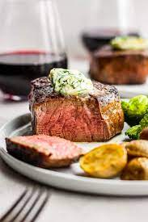

The Best Steak Recipe

Description
This is the best steak recipe that you will find on the internet.
This steak is going to be juicy and paired with deciant potatos and fried brussle sprous.
This steak will guarentee your family will thank you for visiting this site.
Ingredents
- 1tsp. alt
- 1tsp. pepper
- 1tsp. garlic
- 1tbsp Rosemary
- 1tbsp butter
- Olive oil
- 8oz. brussle sprouts
- 1lb. yukon potatos
- 8oz. - 1lb. wagyu filet mignon
Cooking Instructions
- Preheat oven at 400 degrees.
- Coat potatos and brussle sprouts in oil and toss with salt and pepper.
- Add potatos and brussle sprounts to a cooking sheet and add to oven. Cook for 35 min.
- Begin preheating oiled cast iron pan on med-high heat.
- Pat dry steak then lightly coat in oil.
- Season steak with salt, pepper and garlic.
- Sear steak on all sides to form a nice crust (aprox 3 min per side).
- Once steak is seared, place cast iron and steak into oven and cook for 7 min for med-rare. (Adjust time for desired temp).
- Remove steak from oven, top with rosemary and butter and wrap in foil for 5 min.
- Remove potatos and brussles and add to plate.
- Uncover steak and add to plate.
- ENJOY!